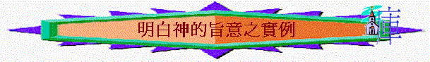

|
如何明白神的旨意 |
|||
|
定定 義義 |
方 法 |
實 例 |
榜 樣 |
一.關乎事奉
「我對這事奉崗位，沒有興趣，也沒有負擔….」
「我覺得自己好軟弱，沒有恩賜，不必選我去事奉….」
「年年都是我做這個崗位，今年應不是我，等其他人承接此位….」
「不要阻住其他人上我這位，給年輕承擔吧….應找接班人….」
「事奉如同升職，今年做組長，下年做職員，再下年做導師…..」
「因聖經說我們可計算代價，我計算過自己沒有太多時間可事奉，所以我今年會停一停。」
「我明年結婚了，可放下事奉了！」
「我已做了六年，下年應是安息年！」
〜以上看法究竟合乎聖經嗎？真正的事奉觀念應是怎樣的？
1.基本觀念
A.事奉是榮耀的
「耶和華又使你和你一切弟兄利未的子孫一同親近他，這豈為小事？你們還要求祭司的職任嗎？」民16:10
「惟有你們是被揀選的族類，是有君尊的祭司，是聖潔的國度，是屬神的子民，要叫你們宣揚那召你們出黑暗入奇妙光明者的美德。」彼前2:9
〜昔日神揀選利未人事奉祂，可能不是作祭司，但已非小事，不是所有人可以有此榮幸，今日我們比利未人更尊貴，因我們是被揀選君尊的祭司，能坦然事奉這位偉大的神，是何等榮耀的事情！
B.事奉是終身的
「叫我們既從仇敵手中被救出來，就可以終身在他面前，坦然無懼的用聖潔、公義事奉他。」路1:74-75
「因為他們自己已經報明我們是怎樣進到你們那裡，你們是怎樣離棄偶像，歸向神，要服事那又真又活的神，等候他兒子從天降臨，就是他從死裡復活的，那位救我們脫離將來忿怒的耶穌。」帖前1:9-10
「在頭一次復活有分的有福了，聖潔了！第二次的死在他們身上沒有權柄。他們必作神和基督的祭司，並要與基督一同作王一千年。」啟20:6
「以後再沒有咒詛；在城裡有神和羔羊的寶座；他的僕人都要事奉他，」啟22:3
〜神拯救我們的目的，是要我們終身事奉祂，在千禧年中我們仍有祭司的職份，至新天新地，我們仍可永遠事奉祂的。
〜而新約的信徒，甚少有停事奉的，因事奉是終身的。
a.關乎安息年
〜舊約的安息年主要目的，是要地安息，人可以憑信心放低一切工作享受神的安息，但人只是放低工作，不代表放低事奉，他們仍有節期、聚會，仍可獻祭，仍有拿細珥人，仍可事奉神的，利未人沒有在安息年放低他們的事奉的，在新約我們也難看到任何使徒有安息年，停事奉的先例。
b.關乎按班次
〜在舊約，利未人，祭司的確有按班次負責會幕的事情，也有按次序時份到耶路撒冷作祭司或作聖殿事奉工作。
〜但未輪到的事奉人員，不是放低所有事奉，他們仍有事奉，是在郊外管理人所獻出來的牛、羊，將來可以有祭物，供物獻上，他們仍要守節，敬拜神的。
c.關乎計算代價
〜留意耶穌引用「計算代價」是用作若要作主的門徒，要跟隨祂時，要知道要付代價，我們信主的人已是主的門徒，已一生跟隨祂了，還要回頭再計算，已不必要的，反而因主愛的感動，不計代價的跟隨祂！
d.關乎接班人
〜聖經的確有接班人出現，但留意聖經的接班人在何時出現了，約書亞，以利沙的出現，是因為帶領的快離開世界；而新約，保羅也提攜提摩太，但不等於放下他使徒職份，他仍不以性命為念，仍繼續向前事奉直到快澆奠的時刻。
〜因此，事奉是一生一世的，不是作執事才終身，信徒也要終生服事主，當然，我們也需休息的，主也會退到曠野，但心志仍不消減，休息也是為主的！
C.事奉是配搭的
「正如我們一個身子上有好些肢體，肢體也不都是一樣的用處。我們這許多人，在基督裡成為一身，互相聯絡作肢體，也是如此。按我們所得的恩賜，各有不同。或說預言，就當照著信心的程度說預言，或作執事，就當專一執事；或作教導的，就當專一教導；或作勸化的，就當專一勸化；施捨的，就當誠實；治理的，就當殷勤；憐憫人的，就當甘心。」羅12:4-8
a.每個信徒也有用的
〜不要說自己沒用，主已將恩賜給了我們，在神眼中，每個肢體也有用處的，可能仍未發現自己的恩賜，但我們仍是這身子一部份，不可缺少的。
b.彼此是互相配搭的
〜我們各人有不同恩賜，用處，不需比較，而是積極互相扶助，彼此配搭。
c.各盡其職專一事奉
〜在新舊約，很多職份，是一生一世，沒有升級的，如有些利未人一生一世也在神殿中看門，如有些人一生一世有教導的恩賜，只管一心專心作，不要用世人「轉換」「升級」「大小」的眼光看，當然有時會按教會需要(下文有述)會調配，人也可羡慕更大的恩賜，但若主已定了，人當專心去完成神所交託的。
D.事奉是輕省的
「凡勞苦擔重擔的人可以到我這裡來，我就使你們得安息。我心裡柔和謙卑，你們當負我的軛，學我的樣式；這樣，你們心裡就必得享安息。因為我的軛是容易的，我的擔子是輕省的。」太11:28-30
〜負主的軛是輕省的，人只要有柔和謙卑，只是同主同軛，雖然可能有勞苦，但仍是輕省的。
E.事奉是不徒然的
「你們說：「事奉神是徒然的，遵守神所吩咐的，在萬軍之耶和華面前苦苦齋戒，有什麼益處呢？」」瑪3:14
「那時，敬畏耶和華的彼此談論，耶和華側耳而聽，且有紀念冊在他面前，記錄那敬畏耶和華、思念他名的人。萬軍之耶和華說：「在我所定的日子，他們必屬我，特特歸我。我必憐恤他們，如同人憐恤服事自己的兒子。那時你們必歸回，將善人和惡人，事奉神的和不事奉神的，分別出來。」瑪3:16-18
2.事奉方向
〜我們又如何選取自己的事奉路向呢？
A.帶領揀選
「我從前留你在革哩底，是要你將那沒有辦完的事都辦整齊了，又照我所吩咐你的，在各城設立長老。」多1:5
〜神給地上教會作帶領有權柄，可以揀選一些人承擔一些職份；而聖經也教導我們要學順服的功課，若教會有需要，帶領有看見，可能揀選你承擔一些崗位，人應當以甘心樂意的心行上。
B.會眾揀選
「十二使徒叫眾門徒來，對他們說：「我們撇下神的道去管理飯食，原是不合宜的。所以弟兄們，當從你們中間選出七個有好名聲、被聖靈充滿、智慧充足的人，我們就派他們管理這事。但我們要專心以祈禱、傳道為事。」大眾都喜悅這話，就揀選了司提反，乃是大有信心、聖靈充滿的人，又揀選腓利、伯羅哥羅、尼迦挪、提門、巴米拿，並進猶太教的安提阿人尼哥拉，」徒6:2-5
〜全眾也可以揀選某一些人承接某一些事奉，他們也有屬靈的眼光，若某一肢體承接某事奉，但整體會眾也覺不適合，此人的名聲不好，我們也當留心。
C.真神揀選
「掃羅行路，將到大馬色，忽然從天上發光，四面照著他。」徒9:3
「主對亞拿尼亞說：「你只管去！他是我所揀選的器皿，要在外邦人和君王，並以色列人面前宣揚我的名。我也要指示他，為我的名必須受許多的苦難。」」徒9:15-16
「奉神旨意，作基督耶穌使徒的保羅，寫信給在以弗所的聖徒，就是在基督耶穌裡有忠心的人。」弗1:1
〜有些職份，例如使徒、傳道的、先知的、是刻意揀選，呼召那人出來終身全職事奉祂！
D.聖靈感動
「凡有智慧、心裡受感的婦女就紡山羊毛。」出35:26
「他們事奉主、禁食的時候，聖靈說：「要為我分派巴拿巴和掃羅，去做我召他們所做的工。」」徒13:2
E.察驗需要
a.看見神家需要
「大衛王對會眾說：「我兒子所羅門是神特選的，還年幼嬌嫩；這工程甚大，因這殿不是為人，乃是為耶和華
神建造的。我為我神的殿已經盡力，預備金子做金器，銀子做銀器，銅做銅器，鐵做鐵器，木做木器，還有紅瑪瑙可鑲嵌的寶石，彩石和一切的寶石，並許多漢白玉。」代上29:1-2
「金子做金器，銀子做銀器，並藉匠人的手製造一切。今日有誰樂意將自己獻給耶和華呢？」於是，眾族長和以色列各支派的首領、千夫長、百夫長，並監管王工的官長，都樂意獻上。他們為神殿的使用獻上金子五千他連得零一萬達利克，銀子一萬他連得，銅一萬八千他連得，鐵十萬他連得。」代上29:5-7
「我的羊在諸山間、在各高岡上流離，在全地上分散，無人去尋，無人去找。」結34:6
b.自己甘心擺上
「因這些人誠心樂意獻給耶和華，百姓就歡喜，大衛王也大大歡喜。」代上29:9
「我又聽見主的聲音說：「我可以差遣誰呢？誰肯為我們去呢？」我說：「我在這裡，請差遣我！」」賽6:8
〜作為神家的一份子，我們是看到裏面的需要，我們是可以自己甘心擺上，可能最終如大衛想為神建殿，但最後神不許，但神也悅納我們為祂的心的。
F.盡己恩賜
a.察驗神給你的恩賜
「為要成全聖徒，各盡其職，建立基督的身體，直等到我們眾人在真道上同歸於一，認識神的兒子，得以長大成人，滿有基督長成的身量，」弗4:12-13
〜留心神給你有甚麼恩賜，例如教導的，傳福音的，執事的(處理事務)，治理的，勸化的，憐憫的，愛……別人也感覺到，而你的導師，傳道人也發現，你自己曾也運用，神也給你能力的，就按你的恩賜選取你事奉的路。
b.按神賜的信心踏上
「我憑著所賜我的恩對你們各人說：不要看自己過於所當看的，要照著神所分給各人信心的大小，看得合乎中道。」羅12:3
〜有時，我們會在某事奉的選取會有膽怯的，嘗試運用神給你信心的大小(不是自信心，而是神給你的信心)，你認為神會給你這恩賜事奉的，就按信心踏上。神給你的信心不是這方面的事奉，也甘心順服，不要比較。
G.聖經原則
a.初入教的不宜作帶領
「初入教的不可作監督，恐怕他自高自大，就落在魔鬼所受的刑罰裡。」提前3:6
b.生命不好的難擔事奉
「作執事的，也是如此：必須端莊，不一口兩舌，不好喝酒，不貪不義之財；要存清潔的良心，固守真道的奧秘。這等人也要先受試驗，若沒有可責之處，然後叫他們作執事。女執事（原文作女人）也是如此：必須端莊，不說讒言，有節制，凡事忠心。執事只要作一個婦人的丈夫，好好管理兒女和自己的家。」提前3:8-12
「然而主的僕人不可爭競，只要溫溫和和的待眾人，善於教導，存心忍耐，用溫柔勸戒那抵擋的人；或者神給他們悔改的心，可以明白真道，叫他們這已經被魔鬼任意擄去的，可以醒悟，脫離他的網羅。」提後2:24-26
「你們要追求與眾人和睦，並要追求聖潔；非聖潔沒有人能見主。」來12:14
二.關乎工作
「做這份工作很辛苦，要轉工….」
「沒有興趣，不做也吧！」
「能事奉神的工作比較屬靈些，我會選擇….」
1.工作原因
A.不變定律
「又對亞當說：你既聽從妻子的話，吃了我所吩咐你不可吃的那樹上的果子，地必為你的緣故受咒詛；你必終身勞苦才能從地裡得吃的。地必給你長出荊棘和蒺藜來；你也要吃田間的菜蔬。你必汗流滿面才得糊口，直到你歸了土，因為你是從土而出的。你本是塵土，仍要歸於塵土。」創3:17-19
〜人犯罪後，地受咒詛，人必須汗流滿面，才得糊口，這是不變的定律，神的旨意，信主的人更當順服，但到主回來的時候，我們就可得真正的安息。
B.聖經吩咐
「我們在你們那裡的時候，曾吩咐你們說，若有人不肯做工，就不可吃飯。」帖後3:10
C.為得糊口
「我們靠主耶穌基督吩咐、勸戒這樣的人，要安靜做工，吃自己的飯。」帖後3:12
D.管理使命
「神就賜福給他們，又對他們說：「要生養眾多，遍滿地面，治理這地，也要管理海裡的魚、空中的鳥，和地上各樣行動的活物。」」創1:28
〜即使沒有亞當犯罪，人仍要工作，是要好好管理神所創造的天地萬物。
E.不連累人
「你們自己原知道應當怎樣效法我們。因為我們在你們中間，未嘗不按規矩而行，也未嘗白吃人的飯，倒是辛苦勞碌，晝夜做工，免得叫你們一人受累。」帖後3:7-8
F.扶助別人
「從前偷竊的，不要再偷；總要勞力，親手做正經事，就可有餘分給那缺少的人。」弗4:28
「我凡事給你們作榜樣，叫你們知道應當這樣勞苦，扶助軟弱的人，又當記念主耶穌的話，說：『施比受更為有福。』」徒20:35
〜原來工作有一個崇高的目的，是要得更多，甚至有餘來扶助有需要的人。
G.事奉基督
「你們作僕人的，要懼怕戰兢，用誠實的心聽從你們肉身的主人，好像聽從基督一般。不要只在眼前事奉，像是討人喜歡的，要像基督的僕人，從心裡遵行神的旨意。甘心事奉，好像服事主，不像服事人。」弗6:5-7
H.見証真道
「不可私拿東西，要顯為忠誠，以致凡事尊榮我們救主神的道。」多2:10
2.注意事項
A.工作實在是勞苦的
「弟兄們，你們記念我們的辛苦勞碌，晝夜做工，傳神的福音給你們，免得叫你們一人受累。」帖前2:9
「也未嘗白吃人的飯，倒是辛苦勞碌，晝夜做工，免得叫你們一人受累。」帖後3:8
〜聖經明說人是要勞苦的，連保羅為不連累人，也要工作，他是辛苦勞碌，晝夜作工的，基督徒不可以因工作勞苦而逃避工作，也不應看那份工作辛不辛苦而為自己主要選擇工作的最重要因素。
B.工作過後要休息的
「天地萬物都造齊了。到第七日，神造物的工已經完畢，就在第七日歇了他一切的工，安息了。神賜福給第七日，定為聖日；因為在這日，神歇了他一切創造的工，就安息了。」創2:1-3
〜神的心意要人工作，但祂也想人安息的，祂期望人做了六日工作後，有一日安息，這安息是憑信心分別出來(賺少了一日)，是歸神的，是記念神的創造與拯救，也是休息日子，所以若一份工作，一星期中沒有一日，人可以分別出來歸神，記念神，享安息的日子，似乎違反了神創造的心意。
C.工作完後可享受的
「我知道世人，莫強如終身喜樂行善；並且人人吃喝，在他一切勞碌中享福，這也是神的恩賜。」傳3:12-13
〜人可以享受勞碌過後的成果，可以吃喝，歡樂，這是神的恩賜，但人若工作過程中，連享受的工夫也沒有了，只顧不息的作工，而缺少享受完成後的成果，此乎也不是神的心意。
D.選工上卻不絆倒人
「凡事都可行，但不都有益處。凡事都可行，但不都造就人。」林前10:23
「若有疑心而吃的，就必有罪，因為他吃不是出於信心。凡不出於信心的都是罪。」羅14:23
「給人行按手的禮，不可急促；不要在別人的罪上有分，要保守自己清潔。」提前5:22
〜如果某肢體選了某一份工作，令人絆倒或與公司、主人同流合污，或是在罪上有份，都是不合宜的。
E.工作上要留意承諾
「你們作僕人的，要凡事聽從你們肉身的主人，不要只在眼前事奉，像是討人喜歡的，總要存心誠實敬畏主。」西3:22
「各人蒙召的時候是什麼身分，仍要守住這身分。你是作奴隸蒙召的嗎？不要因此憂慮；若能以自由，就求自由更好。」林前7:20-21
〜我們要存誠實的心服事地上的主人，人在求工或與雇主的承諾中不可行詭詐，，不可濫用自由而作一個沒有交帶，不守信用，胡亂轉工的基督徒。
F.可選更能事主之工
「又生了該隱的兄弟亞伯。亞伯是牧羊的；該隱是種地的。有一日，該隱拿地裡的出產為供物獻給耶和華；亞伯也將他羊群中頭生的和羊的脂油獻上。耶和華看中了亞伯和他的供物，只是看不中該隱和他的供物。該隱就大大的發怒，變了臉色。」創4:2-5
〜該隱選了種地工作，在未能吃肉的環境中，更能得糊口，但亞伯卻送上牧羊，羊長大後人不能吃，只能用羊皮作衣服，明顯亞伯選此行業不單是糊口，也為事奉，可以獻羊為祭事奉主。
〜人在選擇中，可有自由度選自己的工作，若覺此份工作更能事奉主，可以傳福音，可以星期六日能返教會敬拜神，有為主的心，神也悅納。
〜但信徒要留意，基本上，任何一行也能事奉主，服事地上主人如同服事主一樣，所以不要看輕自山所作的工，也是事奉神的。
G.沒工作仍要行善事
「因我們聽說，在你們中間有人不按規矩而行，什麼工都不做，反倒專管閒事。」帖後3:11
「弟兄們，你們行善不可喪志。」帖後3:13
「從前偷竊的，不要再偷；總要勞力，親手做正經事，就可有餘分給那缺少的人。」弗4:28
〜若信未能找到工作，不是虛渡光陰，專管閒事，反而要做正經事，可以行善，可以作義工，可以幫助其他人的。
三.關乎感情
「我覺得拍拖好好，不需要結婚。」
「我覺得她幾好，我也有感動，一定是神的旨意！」
「在這個時代談戀愛，不需要諮詢長者，因太老土….」
1.婚姻目的
A.獨居不好
「耶和華神說：「那人獨居不好，我要為他造一個配偶幫助他。」」創2:18
B.配搭幫助
〜神給人有配偶，為了對方可以成為自己的幫助，一人有一人不足的地方，透過男女各不相同的性情，思考、能力，互相配搭，更能好好管理神創造的天地。
C.敬虔後裔
「神就賜福給他們，又對他們說：「要生養眾多，遍滿地面，治理這地，也要管理海裡的魚、空中的鳥，和地上各樣行動的活物。」」創1:28
「雖然神有靈的餘力能造多人，他不是單造一人嗎？為何只造一人呢？乃是他願人得虔誠的後裔。所以當謹守你們的心，誰也不可以詭詐待幼年所娶的妻。」瑪2:15
〜男女結婚，不單為了生養，也有責任、使命建立下一代成為敬虔屬神的兒女。
D.免受試探
「但要免淫亂的事，男子當各有自己的妻子；女子也當各有自己的丈夫。」林前7:2
「倘若自己禁止不住，就可以嫁娶。與其慾火攻心，倒不如嫁娶為妙。」林前7:9
〜若一雙拍拖肢體，長期拍拖，但很久也不結婚，很易受試探，倒不如嫁娶為妙。
E.彰顯奧秘
「因我們是他身上的肢體（有古卷加：就是他的骨他的肉）。為這個緣故，人要離開父母，與妻子連合，二人成為一體。這是極大的奧秘，但我是指著基督和教會說的。然而，你們各人都當愛妻，如同愛自己一樣。妻子也當敬重他的丈夫。」弗5:30-33
F.獨身也美
「我願意眾人像我一樣；只是各人領受神的恩賜，一個是這樣，一個是那樣。」林前
7:7
「我願你們無所掛慮。沒有娶妻的，是為主的事掛慮，想怎樣叫主喜悅。娶了妻的，是為世上的事掛慮，想怎樣叫妻子喜悅。婦人和處女也有分別。沒有出嫁的，是為主的事掛慮，要身體、靈魂都聖潔；已經出嫁的，是為世上的事掛慮，想怎樣叫丈夫喜悅。我說這話是為你們的益處，不是要牢籠你們，乃是要叫你們行合宜的事，得以殷勤服事主，沒有分心的事。」林前
7:32-35
~更專心討主喜悅
~得以殷勤服事主
2.如何尋求
A.生命的追求
「當人在世上多起來、又生女兒的時候，神的兒子們看見人的女子美貌，就隨意挑選，娶來為妻。耶和華說：「人既屬乎血氣，我的靈就不永遠住在他裡面；然而他的日子還可到一百二十年。」」創6:1-3
「我願男人無忿怒，無爭論（或作：疑惑），舉起聖潔的手，隨處禱告。又願女人廉恥、自守，以正派衣裳為妝飾，不以編髮、黃金、珍珠，和貴價的衣裳為妝飾；只要有善行，這才與自稱是敬神的女人相宜。女人要沉靜學道，一味的順服。」提前2:8-11
〜屬血氣的人，會按自己心意、血氣擇偶，可能另一半不是神喜悅的，是不信的。
〜因此，要能正確尋求神的心意，不是用自己的血氣，那人要生命好。
〜作為弟兄，要作一個好弟兄----少血氣忿怒，多用聖潔的手隨處禱告。
〜作為姊妹，要作一個好姊妺----少血氣不服，多安靜，柔和，甘心順服。
〜自己先成為一個不屬血氣，屬靈、可愛，適合對方的基督徒，才認真尋找另一半。
B.聖經的原則
「你們和不信的原不相配，不要同負一軛。義和不義有什麼相交呢？光明和黑暗有什麼相通呢？」林後6:14
「才德的婦人誰能得著呢？他的價值遠勝過珍珠。」箴31:10
「艷麗是虛假的，美容是虛浮的；惟敬畏耶和華的婦女必得稱讚。」箴31:30
a.是主內的
〜聖經給我們在擇偶上是有自由，只要是信主的，就可以，即使對方可能和自己不夾，也不是罪，若結了婚，好好愛對方。
b.可更好的
〜雖給一定自由，但人也可選更好，例如不單看外貌，也看才德，也看對方是否愛主，這是可以選擇，但若人要選外貌，他/她是信主，也不是犯了甚麼罪，是那人自己的選上，他當然要付上日後配偶可能仍沒才德的結果。
C.祈禱的尋求
〜人可以祈禱求問神，但不單是祈禱是否這一個(有時神未必會答)可祈禱問「是否這段時候」「我是否適合談戀愛」
〜「她/他是否已出現」「是否仍要等候」，這樣的祈禱可能更準確，更沒自己的血氣意思。
D.持久的感動
〜聖靈的感動不是忽是忽非，人的感動可能會因肉眼所見而產生未有深入認識的衝動、迷戀，見到另一個更好的就有另外感動，但神的感動，很多時候不因環境、時間改變的。
〜所以耐心尋求，察驗自己是一時衝動還是聖靈持久的感動。
E.別人的意見
〜問一問長者、傳道人、導師、朋友、家長，對方的朋友意見，究竟自己是否適合對方，究對對方有否拍拖，究竟對方喜歡甚麼類型的人，對方有甚麼缺點，自己是否成熟可成為對方的幫助….。
F.自我的察驗
a.自己是否成熟，是否一個可愛、不血氣的人。
b.自己是否可成為另一半的幫助。
c.自己是否接受另一半的幫助
d.明白拍拖的意義/結婚的意義
e.知道要承擔的結果
「婦女美貌而無見識，如同金環帶在豬鼻上。」箴11:22
「智慧婦人建立家室；愚妄婦人親手拆毀。」箴14:1
「我願你們無所掛慮。沒有娶妻的，是為主的事掛慮，想怎樣叫主喜悅。娶了妻的，是為世上的事掛慮，想怎樣叫妻子喜悅。婦人和處女也有分別。沒有出嫁的，是為主的事掛慮，要身體、靈魂都聖潔；已經出嫁的，是為世上的事掛慮，想怎樣叫丈夫喜悅。我說這話是為你們的益處，不是要牢籠你們，乃是要叫你們行合宜的事，得以殷勤服事主，沒有分心的事。」林前7:32-35
f.對方是否適合自己/自己是否適合對方？
g.我是否認識對方，接納對方？
h.我可以接受與此人伴我一生一世嗎？
i.其他